第 20 章・30,045 字
World Mandolin Family Model, Material and Specification Database（世界曼陀林家族型號・材料・規格資料庫）
前面幾章談原理。這一章談的是一份可以不斷更新的研究資料庫。
它的做法，是把每一把琴拆成幾個獨立欄位：型號、家族、結構、調弦、弦長、木材、價格、資料來源。每一個欄位都要能單獨被查證。
這個做法來自實際的困擾。作者整理鈴木（Suzuki）、Calace 等品牌時，一再遇到同一種情況。
型號名稱確實存在，但網路上流傳的木材、年份或價格可能是錯的。而且同一個系列裡的琴，不能互相推測。
所以本章堅持「一個明確型號一列」。M-30、M-60、M-80、M-100 各有官方資料，就分成四列。
同一個型號如果跨年代改過規格，只要年代能確認，也拆成不同列。
表格裡的空白、「未取得可靠資料」和 D 級標記，都是研究結果的一部分，不是表格沒做完。
商品名稱會因地區而不同。同樣叫 Mandola（曼陀拉），在美國常指 C–G–D–A 的中音樂器；在其他地區，可能指 G–D–A–E、低八度的樂器。
Mandocello（曼陀切羅）、Mandoloncello（曼陀隆切羅）、Liuto Cantabile（康塔比萊魯特琴）的用法，也會因義大利、日本、英美傳統而不一樣。
CMSA（美國古典曼陀林協會）的家族記譜指南，明確記錄了這些差異。所以本資料庫不靠商品名稱分類，而是優先看四件事：調弦（tuning）、實際發聲音域（sounding range）、弦組數（course）、弦長（scale）。〔S2001〕
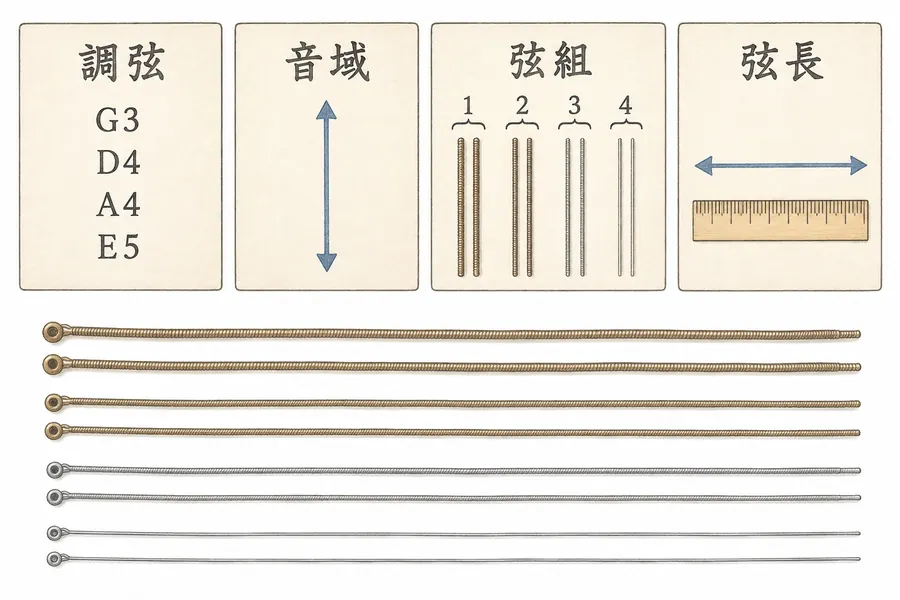
圖解 20.1 資料庫辨識的四項座標（示意）
分類完之後，「結構」要另外列。圓背（bowlback）、平背（flatback）、雕刻面板（carved-top）、F 型（F-style）、A 型（A-style）、平頂（flat-top），都不應該和家族名稱混在一起。
這樣才不會把「Mandola」當成一種外型，也不會把 F-style 當成一個音域家族。
這個原則對搜尋也很實用。如果你只用「mandola」去搜國際市場，會同時跳出 C 調弦和 G 調弦的樂器。先確認實際調弦，才能回到正確的資料群。
常見誤解：「Mandola 就是一種琴身外型」 不對。Mandola 講的是「音域家族」，圓背、平背講的是「結構」。 這兩件事要分開講，否則你會把一整套分類搞混。
資料表的每一列，至少要回答五個不同的真實性問題。
所以本書用 A／B／C／D 標記可信度時，不會把整列一次評分。
最理想的情況是「型號 A、年代 A、木材 A、價格 A」。也可能出現「型號 A、年代 B、木材 D、價格 C」。
後面這種列，不應該被寫成一張看起來很完整、其實一半是猜的規格表。
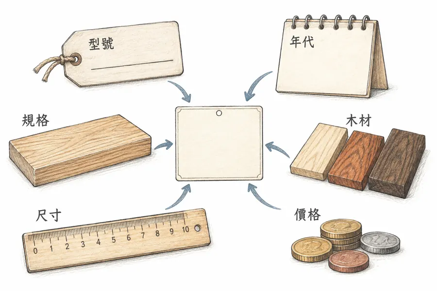
圖解 20.2 型號 年代與規格的分項查證（示意）
官方資料也不是萬能答案。
現行官網適合確認「現行產品」。但如果品牌歷史頁寫「世界第一」「革命性設計」，還是要用專利或館藏資料交叉確認。
反過來，博物館的實物非常適合確認「那一把琴」的材料與尺寸，卻不一定代表整個生產期都完全一樣。
常見誤解：「同一個系列，材料一定一樣」 不一定。同系列的高低階，可能同時改掉琴身木條數、木種、指板格數與琴頭構造。 所以要一個型號一個型號查。
平背琴和雕刻琴，可以分成面板（top）、背板（back）、側板（sides）三部分。
圓背琴的背面是許多木條（ribs／staves）拼成的，硬塞進「背板／側板」欄位會失真。這就是本資料庫改用「琴體／ribs」概念的原因。
結構上不適用的欄位，要寫「不適用」。這樣讀者才分得清「不適用」和「資料待查」。
木材名稱只寫到來源能支持的程度。
原廠只寫玫瑰木（rosewood），本書不會擅自翻成印度玫瑰木（Indian rosewood）。
原廠只寫雲杉（spruce），也不會因為同品牌高階型號用阿迪朗達克雲杉（Adirondack spruce），就推測這一款也是。
商業名稱和植物學上的樹種（species），不是同一個層次。
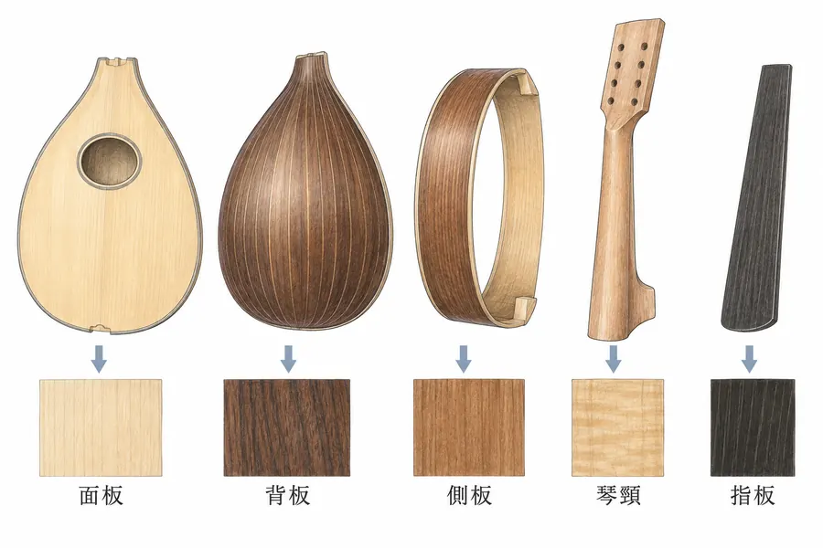
圖解 20.3 依結構記錄木材（示意）
花紋木（figured）、火焰紋（flamed）、AAA 這類說法，是視覺上或商業上的等級，不等於不同樹種。
它們可以記在「特殊工藝／等級」欄，但不能取代真正的樹種欄。
二手賣場常寫「弦長 67 cm」。實際上，他量到的可能是琴枕（nut）到琴尾板（tailpiece），甚至是整把琴的長度。
弦長（scale length）的定義是「有效振動長度」，通常是琴枕到琴橋絃枕（bridge saddle）。
浮動琴橋（floating bridge）的位置如果跑掉，量出來的數字還會反映錯誤的設定。所以優先採用原廠的技術規格。
如果只有實物可以量，就要記錄「你怎麼量的」和誤差。老琴的琴橋可能不是原裝，也可能移動過，不能把現況直接當成原始設計。
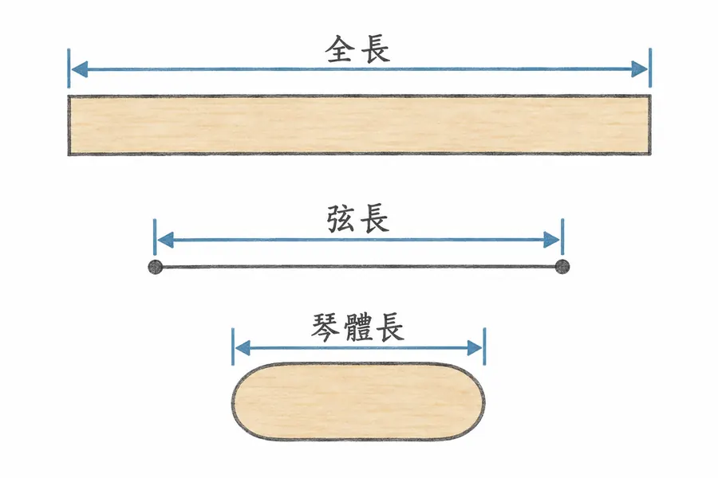
圖解 20.4 弦長 全長與琴體長（示意）
家族分類高度依賴弦長。標準曼陀林常見約 33–35 cm。八度曼陀林（octave mandolin）、曼陀拉、曼陀切羅則逐步變長。
但每個傳統都有自己的範圍，不能用單一個門檻值自動分類。
「這把琴當年售價 20,000」，如果沒有年份、幣別和價格性質，幾乎沒辦法比較。
原廠牌價（list price）、街價、拍賣落槌價、二手刊登價、整備後商店售價，全部不一樣。
所以本章把價格當成「會隨時間變動的資料」。
跨年代比較還要考慮通膨、匯率、稅金、地區代理差異。
1923 年 Gibson F-5 的官方歷史頁提到，當時售價 250 美元。這個數字在歷史敘述上很重要，但不能不調整購買力，就直接和今天的美元做「漲了幾倍」的比較。〔S2002〕
圖解 20.5 價格資料與日期（示意）
二手行情尤其要分清楚「刊登」（listing）和「成交」（sold）。
賣家喊價只能顯示市場期待，不能證明成交價。如果沒有可信的成交紀錄，本書寧可給範圍和日期，不假裝精確。
常見誤解：「賣家開的價，就是這把琴的行情」 開價只代表賣家的期待。真正有參考價值的是「成交價」，而且要記下日期與品況。
Calace（卡拉切）官網提供的欄位非常完整，很適合資料庫使用。
現行的曼陀林型號 24／26、13、15、16Bis 等，明列 33.5 cm 弦長、調弦、ribs 數、琴身材料、面板、指板。
曼陀隆切羅（Mandoloncello）頁面則明列 61 cm 弦長，而且同時有 8 弦四弦組與 10 弦五弦組兩種版本。〔S2003〕〔S2004〕
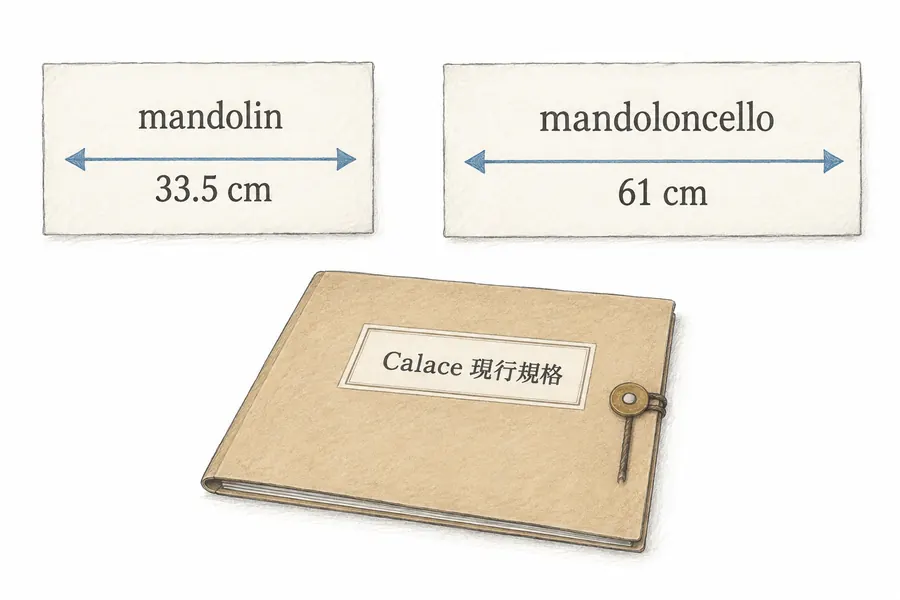
圖解 20.6 官方規格覆核案例一（示意）
這些資料可以直接得到 A 級的「現行官方規格」。但仍然要標註查閱日期，因為未來產品可能改版。
現行資料也不能自動套用到同名的歷史型號上。
Calace 這個案例還說明另一件事：同品牌的高低階，不一定只差裝飾。
琴身 ribs 數量、楓木或玫瑰木、指板格數、琴頭構造，都可能同時改變。所以資料庫必須一個型號一個型號列欄位。
Gibson 現行的 1923 F-5 Master Model Reissue 官方頁，提供的規格非常完整。
它列出紅雲杉面板（red spruce top）、花紋紅楓木琴身／背板／琴頸（figured red maple），以及黑檀指板與琴橋（ebony fingerboard／bridge）。頁面也說明設計歷史。
這適合確認「現行復刻版」，但不能把復刻版的規格，當成每一把 1923 年原版的普遍實測結果。〔S2002〕
Collings MF5 官方頁提供阿迪朗達克雲杉、東部火焰楓木（Eastern flamed maple）、音梁（tone bars）、13 7/8 吋弦長、複合半徑（compound radius）等完整現代規格。
Eastman MD315 則提供全單雲杉（solid spruce）、全單楓木（solid maple）、13 7/8 吋弦長、12 吋指板半徑、弦距（action height）等。
這兩個案例顯示，現代官方頁的欄位完整度可以非常高。〔S2005〕〔S2006〕
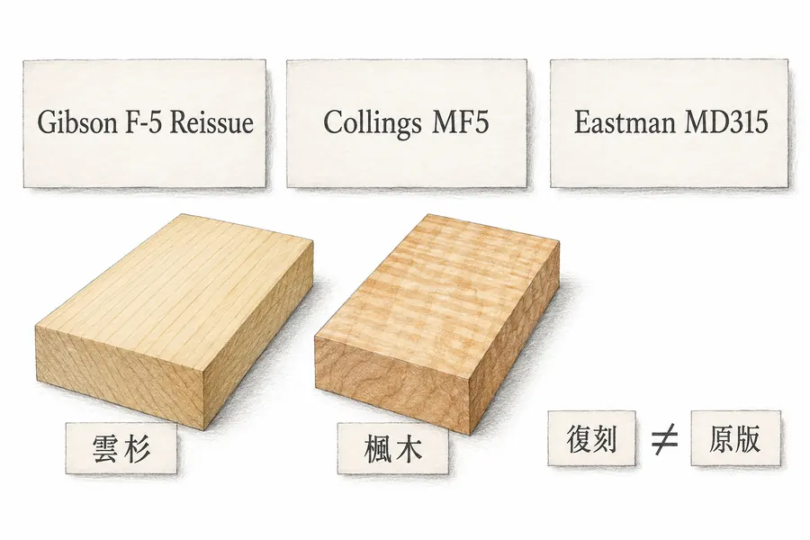
圖解 20.7 官方規格覆核案例二（示意）
但比較時要避免「規格表競賽」（spec sheet racing）。
更多鑲邊、更多花紋、更亮的漆，不會自動等於聲音更好。資料庫的工作是保存事實，好壞評價是另一件事。
常見誤解：「規格欄位越多，琴就越好」 不是。規格表長，只代表資料完整。 聲音好不好，要回到第 16、17 章的原理，以及你自己試彈的感受。
Northfield（北地）不只公開型號規格，還公開部分製造流程與材料來源。
官方說明指出，Big Mon 等系列可能在密西根（Michigan）選材與加工，在山東青島（Qingdao）組裝與上漆，再回到密西根做設定（setup）。
這表示「品牌所在地」和「每一道工序的所在地」，可以是不同的。〔S2007〕
對收藏者來說，這類資料非常重要。只寫「美國品牌」（USA brand），回答不了「製造產地」這個問題。
反過來，也不應該因為某一道工序在中國完成，就忽略設計、材料選擇與最終設定裡的跨國分工。
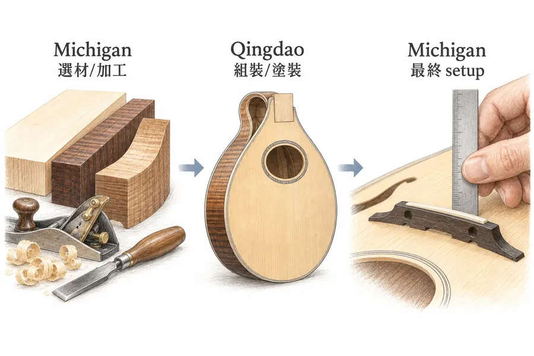
圖解 20.8 官方規格覆核案例三（示意）
資料庫如果有「國別／製造地」欄，應該盡可能寫成可驗證的多段資訊，把品牌所在地和製造分工分開交代。
鈴木（Suzuki）2016 年官方型錄，直接列出多個曼陀林家族型號，包括 M-30、M-60、M-80、M-100、MD-4、MC-836 等。
前期查證中最重要的發現之一，是 MC-836。
官方資料明列：雲杉面板、玫瑰木平背琴身、桃花心木琴頸、玫瑰木指板，以及 574 mm 的振動長度。
這和部分二手頁面長期複製的「大型圓背」描述不符。〔S2008〕
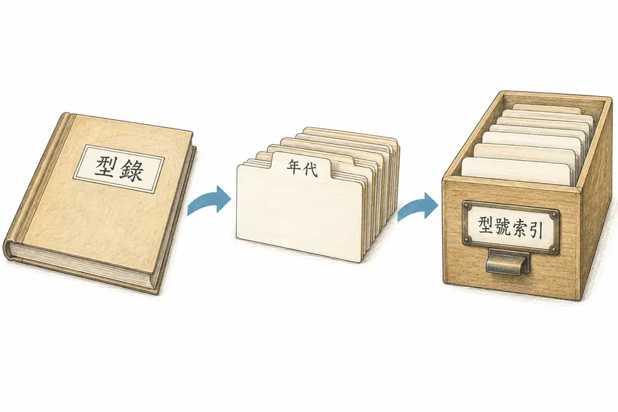
圖解 20.9 Suzuki 型錄的使用（示意）
這種錯誤為什麼會擴散？因為賣場互相引用。新頁面看起來像「多來源交叉確認」，實際上它們可能都來自同一個沒查證過的說法。
來源數量不等於來源獨立性。
所以資料庫記錄來源時，要優先保存原始型錄的檔名、年份與頁面，並保留原始檔案，方便日後覆核。
常見誤解：「很多網站都這樣寫，所以應該是對的」 十個網站寫同一句話，可能只是十次抄同一個來源。 判斷重點是：這些來源是不是「各自獨立」查到的。
假設你想找一把 33–35 cm、雲杉面板、玫瑰木圓背的職業級曼陀林。
你可以先用家族、弦長、面板、琴身材料篩選，再回到來源，逐列看每一列的注意事項（caveat）。資料庫幫你定位資料；重要判斷仍要核對原始文件。
如果你要買老琴，先用「型號存在性」和「年代」排除明顯誤標，再看實物品況。
如果你要研究製琴史，可以從同品牌不同年代的材料與結構變化，找出趨勢。
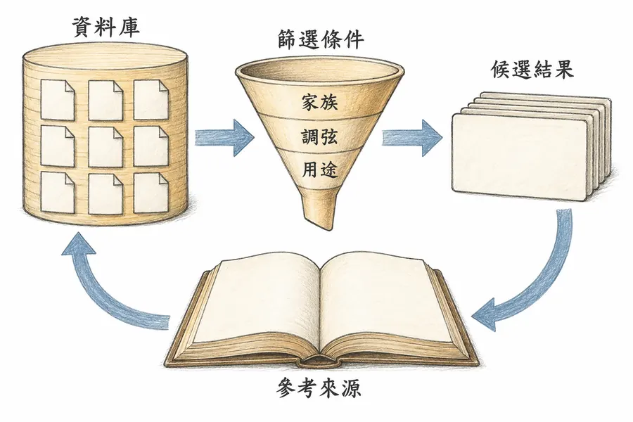
圖解 20.10 資料庫的篩選與閱讀（示意）
最重要的是保留「不知道」。
真正的專業資料庫允許未知存在，因為未來一份型錄、或一把有來源履歷（provenance）的實物，都可能改變答案。
把每個空格都填滿，反而會讓錯誤變得難以追蹤。
同一列的不同欄位，可以有不同等級。
「型號存在」是 A，不代表「價格」也是 A。木材是 A，也不代表年代是 A。
如果表格空間有限，可以在「查證／來源」欄用簡碼記錄，例如「存在 A／木材 B／價格 D」。
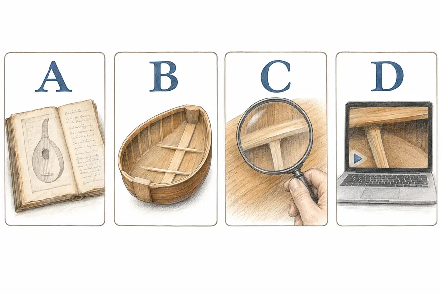
圖解 20.11 查證等級與證據範圍（示意）
本章主表沿用前期「一型號一列」工作檔的 203 個逐列項目，並保留不確定性，不用同系列去補完缺欄。
後續如果新增資料，應該另存新版本，保留歷次紀錄。
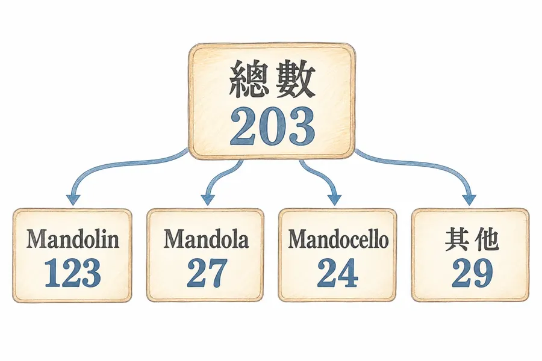
圖解 表 20-1｜本版資料庫收錄量與家族分布（示意）
以下表格沿用前期查證版的 203 個逐列項目。欄位中的「未取得可靠資料」與 B／C／D 等級，全部原樣保留。
這一次只用新增的官方資料當「錨點」來校正方法，不用同系列或相似外觀去補滿缺欄。
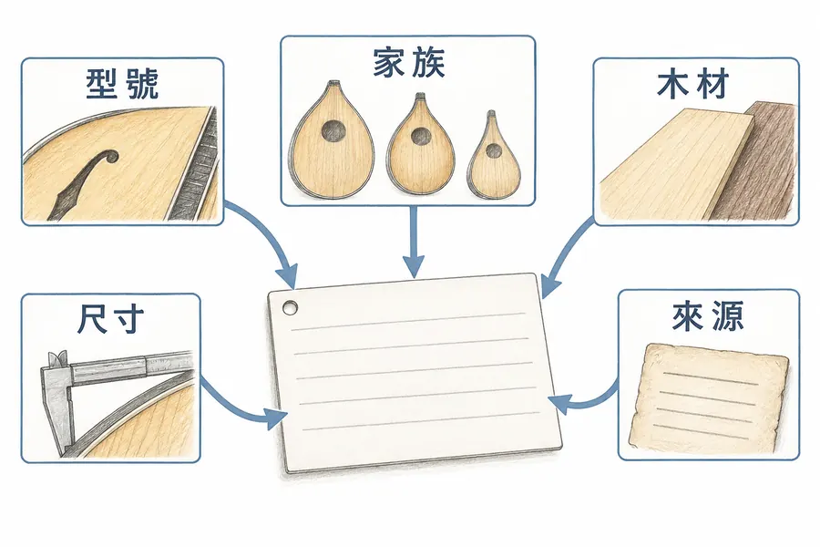
原本的總表有 8 欄。對初學者來說，8 欄一起看只會頭暈。所以這裡拆成兩張：
價位欄裡的 H、S、C、B、A，是原稿使用的等級代號。原稿並沒有完整定義每個代號的意思，只看得出來是「由低到高」的排序，其中 H 常與歷史價格一起出現。
A 級以上還有 A-、A+、S-、S 等細分。這些代號一律原樣保留，方便你回頭對照原書。看不懂代號時，直接看後面的文字說明就好。
「未取得可靠資料」不是漏填。它代表作者查過，但沒找到能站得住腳的來源。
新手速查
以上四款來自 2016 年官方型錄，是目前資料最硬的一組。
進階查證
注意 M-30 的寫法是「15 片，採 27 片式樣」。片數與外觀樣式是兩件事，不能互相換算。
這批型號是二手市場的主力，但幾乎每一欄都缺資料。以下只列「有線索」的部分。
這批型號的共通點是：型號名稱本身常見，但規格幾乎都靠二手描述。所以可信度大多停在 C。
全系列都是圓背、G–D–A–E。價格一律「二手市場依品況，不設固定價」。
Model N 與 MR-600 的「？」是原稿就有的。這代表連「這個型號到底存不存在」都還沒確定。
全系列都是那不勒斯式圓背、G–D–A–E、約 33.5 cm 弦長、雲杉面板。價格一律「依型號／訂製」，現價需即時查。
「平滑 ribs」（smooth）與「溝槽 ribs」（fluted）是兩種不同的琴身表面做法，不是片數差異。
這是博物館實物等級的資料，適合確認「那一把琴」，但不代表整個型號的生產期都一樣。
A 系列與 F 系列共 11 個型號。逐年規格需個別查，下表是同系列的通則。
以上價格都是「歷史原價／收藏價，依年份與品況」。
「系列歷史常見」是保守說法。它代表「通常是這樣」，不代表「每一把都這樣」。
價格為系列整體約 US$700–4,000＋（歷史工作檔）。個別型號的精確規格，需要到官網逐頁查。
12 個型號。除 MF5 系列面板為阿迪朗達克雲杉外，其餘為「Spruce，精確依型號」。
價格為「精品新琴，數千美元以上」。
「A／B」的意思是：型號與部分規格是 A 級，但精確木料要逐型號查，目前只到 B 級。
現行價格依官網，購買時需重查。
這一組是「型號確定、材料只到系列級」的典型。要買之前，請向店家確認那一個型號的實際配置。
系列約 US$500–3,000＋（工作檔）；精確規格依版次。
約 US$400–1,500＋（工作檔）。
三款的弦長都是「未取得可靠資料」。
價格為「古董／復刻價差大」。
弦長一律「依訂製」。
弦長與琴頸規格都是「依版本」。「Bozeman 期／Gibson 期」是指工廠變動的兩個階段，價格會不同。
曼陀拉有兩種調弦，買琴時一定要先問清楚：
兩者弦長可能一樣，但音域與用法完全不同。這就是 20.1 說「不能只看商品名稱」的實例。
MD-10 是 Master Hand 系列。除了 MD-4 有官方型錄支撐，其餘都只有二手或實物線索。
全系列圓背、C–G–D–A、約 43.2 cm 弦長、雲杉面板。現價需即時查。
弦長一律約 43.2 cm，面板一律 Spruce，調弦一律 G–D–A–E（低八度）。現價需即時查。
弦長一律「依年份」；琴頸與指板「依型號」。
Northfield 這一組型號（AT2、AT3、EL-1、EL-2）在原稿裡連弦長、面板都寫「依型號」。這是原稿的狀態，不是改寫時省略。
MC-836 就是 20.9 提到的那把。它是平背，不是大型圓背。MC-815／835／811／812／600 則只有「可能是曼陀切羅」的線索。
琴頸為 Mahogany；指板常見 Ebony。弦長一律「依年份」。
Musikalia 系列是 Embergher 樣式。同樣的「依型號」代表原稿沒有取得更細的資料。
Calace 的曼陀隆切羅分成 8 弦四弦組與 10 弦五弦組兩種。面板都是 Spruce／Fir（雲杉／冷杉）。價格都是「訂製價」，現價需即時查。
8 弦四弦組（C–G–D–A）
10 弦五弦組（C–G–D–A–E）
「8 弦／10 弦」不只是多兩條弦。弦組數變成五組，音域往上多一個五度，用途也不一樣。
曼陀貝斯的調弦寫「E–A–D–G 常見」，是因為歷史上不同來源的記法不一。這裡保留原稿的保守寫法。
這一節是本章真正的重點。上面的表格會過時，但這個流程不會。
第 1 步：確認型號真的存在
先找原廠型錄或官方頁面。找不到，就先記成「待考」，不要因為賣場有寫就當真。
第 2 步：確認年代
同一個型號名，可能橫跨幾十年。先問「這是哪一年生產的」，再談規格。
第 3 步：確認調弦與弦長
這一步決定它屬於哪個家族。看到「mandola」不要急著下結論，先問 C 調弦還是 G 調弦。
第 4 步：確認木材，並分清「商業名稱」與「樹種」
原廠寫「rosewood」就記「rosewood」。不要自己升級成「Indian rosewood」。
第 5 步：確認價格的性質與日期
問清楚是牌價、店價、刊登價還是成交價，並記下查閱日期。
常見誤解：「查到了就等於確認了」 查到，只是拿到一條線索。 真正的確認，是知道「這條線索屬於哪個等級」，並且寫下來源與日期。
有些品牌整批都還沒建檔完成。以下不是「這些琴不存在」，而是「目前只確認到系列層級」。
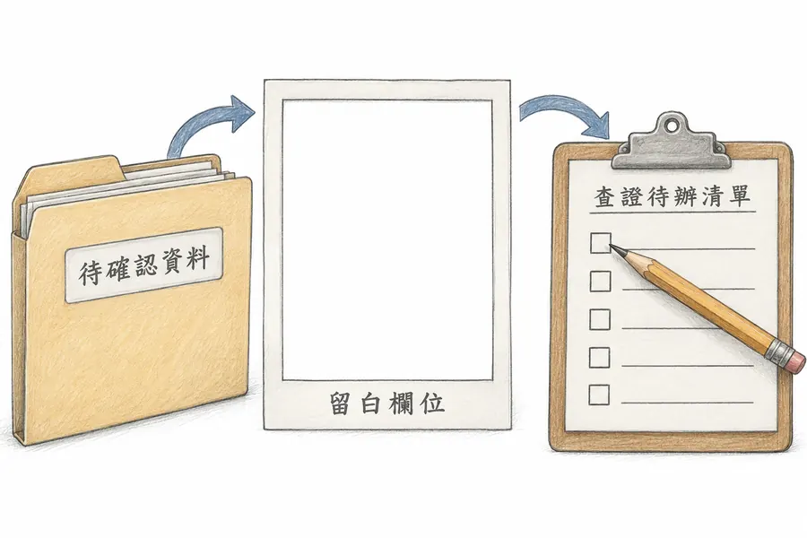
圖解 20.13 待確認的系列與型號（示意）
注意這張表的「查證」欄全部是 B／C。意思是：連「這個系列存在」都只到 B 級，「具體型號」則只到 C 級。
學習檢查：作答、核對、複習
先自己作答，再看答案。答錯時回到本章相關小節重新讀一次。
1. 型號資料庫為什麼把木材可信度獨立評分？
A. 型號存在不代表每項材料都已確認
B. 為了讓表格更長
C. 木材永遠最重要
D. 價格不能記錄
2. 遇到同系列不同型號時，應？
A. 每個型號分開查證
B. 直接互相推測
C. 只看最貴的
D. 只記系列名稱
3. 二手刊登價和成交價應？
A. 分開記錄
B. 視為相同
C. 只留較高者
D. 全部忽略
答案：1.A 2.A 3.A
查證來源：找原文、核條件、留紀錄
【S2001】Classical Mandolin Society of America：Music Notation for Mandolin Family Instruments。 家族名稱、調弦與記譜的地域差異。
https://classicalmandolinsociety.org/wp-content/uploads/Music_Notation_for_Mandolin_Family_Instruments_v3.pdf
【S2002】Gibson：1923 F-5 Master Model Reissue / history。 現行復刻規格與 1923 F-5 官方歷史敘述。
https://www.gibson.com/pages/gibson-mandolins
【S2003】Liuteria Calace：Official mandolin specifications。 33.5 cm 弦長、ribs、木材、調弦等。
https://www.calace.it/en/mandolini
【S2004】Liuteria Calace：Mandoloncelli & Liuti specifications。 61 cm 弦長、8／10 弦曼陀隆切羅等。
https://www.calace.it/mandoloncelli-liuti
【S2005】Collings Guitars：MF5 official specifications。 現行 F 型規格。
https://collingsguitars.com/mandolins/mf5/
【S2006】Eastman Guitars：MD315 official specifications。 現行 F 型規格與設定數值。
https://www.eastmanguitars.com/md315
【S2007】Northfield Mandolins：How Northfield Works。 跨國材料、加工、組裝與設定流程。
https://www.northfieldinstruments.com/how-northfield-works
【S2008】Suzuki Music／鈴木バイオリン製造：Suzuki Music 2016 Catalog。 MC-836 等家族型號官方規格。
（本書前期查證所使用的 2016 官方型錄）